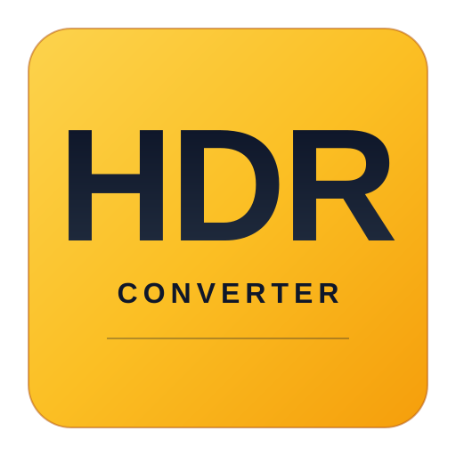
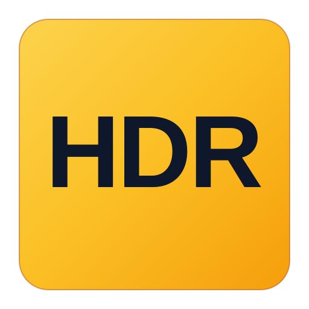

专业工具风格 · 横向亮度渐变条 · 暗→亮的动态范围
核心视觉：三条水平堆叠的渐变条，从左到右代表"暗部 → 暗中间调 → 亮中间调 → 高光"，直观传达 HDR = 高动态范围 的本质。
配色选择：深蓝 + 橙色 —— 类似 DaVinci Resolve、Photoshop 等专业影像工具的行业配色，传递"专业、严谨、可信赖"。
字体处理：字母 "HDR" 居中且克制，作为视觉锚点；衬线干净无装饰，确保小尺寸下也能识别。
应用图标、应用商店、社交头像

网站头部、文档标题、关于页面
任务栏、按钮图标、favicon

配色逻辑：横向条带用"暗→中→亮"的连续渐变，模拟人眼/相机感光元件捕捉的光强范围。HDR 的核心价值就是"同时保留暗部细节和高光细节"，所以渐变条比单色更准确传达概念。